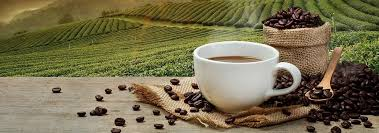

French roast is an intense, dark-roast coffee, characterized by a smoky-sweet flavor, oily surface, and almost no acidity. Roasted to the second crack (roughly 400°F), it offers a full-bodied, bold experience with dark chocolate and spice notes. It is ideal for those seeking a strong, heavy-bodied cup rather than a bright, acidic brew.Key CharacteristicsRoast Level: Extremely dark, often reaching the second crack where oils coat the bean surface.Flavor Profile: Distinctly smoky, bold, and robust with notes of dark cocoa, spices, and cloves.Acidity & Body: Very low acidity and high, heavy body.Appearance: Dark brown to nearly black beans

Colombian coffee is renowned for its balanced flavor, bright acidity, and medium body. Grown in the high-altitude regions of Colombia, it offers a smooth, mild taste with notes of caramel, nuts, and citrus. The beans are typically medium roasted to preserve their unique flavor profile, making it a popular choice for both drip coffee and espresso. Key CharacteristicsOrigin: Grown in Colombia’s mountainous regions, benefiting from ideal climate and soil.Roast Level: Medium to medium-dark to highlight the coffee’s natural flavors.Flavor Profile: Balanced with bright acidity and medium body, featuring notes of caramel, nuts, and citrus.Acidity & Body: Bright acidity with a smooth, medium body.Appearance: Medium brown beans
copyright©2019